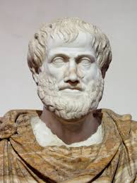

Aristóteles (en griego antiguo: Ἀριστοτέλης Aristotélēs; Estagira, 384 a. C.-Calcis, 322 a. C.)123 fue un filósofo, polímata y científico nacido en la ciudad de Estagira, al norte de Antigua Grecia. Es considerado junto a Platón, el padre de la filosofía occidental. Sus ideas han ejercido una enorme influencia sobre la historia intelectual de Occidente por más de dos milenios.124
Fue discípulo de Platón y de otros pensadores, como Eudoxo de Cnido, durante los veinte años que estuvo en la Academia de Atenas.5 Poco después de la muerte de Platón, Aristóteles abandonó Atenas para ser el maestro de Alejandro Magno en el Reino de Macedonia durante casi 5 años.5 En la última etapa de su vida fundó el Liceo en Atenas, donde enseñó hasta un año antes de su muerte.5
Aristóteles escribió cerca de 200 obras, de los cuales solo se han conservado 31 (ninguna de ellas destinada a la publicación) en el Corpus Aristotelicum sobre una enorme variedad de temas, entre ellos: lógica, metafísica, filosofía de la ciencia, ética, filosofía política, estética, retórica, física, astronomía y biología. Es reconocido como el padre fundador de la lógica y de la biología, pues si bien existen reflexiones y escritos previos sobre ambas materias, es en el trabajo de Aristóteles, donde se encuentran las primeras investigaciones sistemáticas al respecto.
Para Aristóteles, solo hay un único mundo, en donde cada sujeto sensible está compuesta de materia y forma (hilemorfismo), siendo esta última su esencia.